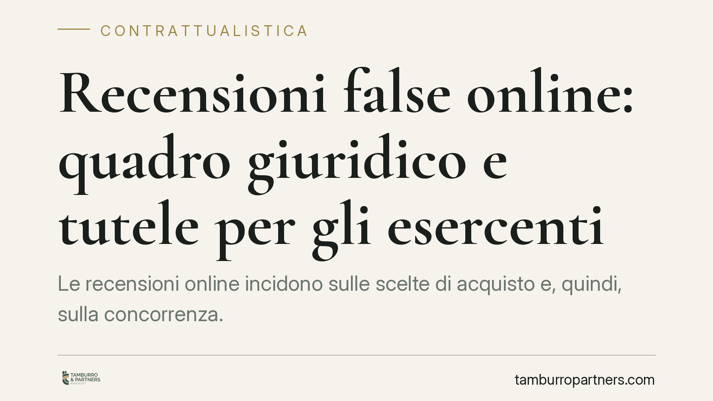

Recensioni false online: quadro giuridico e tutele per gli esercenti
Le recensioni online incidono sulle scelte di acquisto e, quindi, sulla concorrenza. La diffusione di valutazioni false o manipolate solleva questioni di pratiche commerciali scorrette, responsabilità delle piattaforme e tutela della reputazione degli esercenti. Il tema è oggi al centro del dibattito regolatorio europeo e nazionale: conviene conoscere gli strumenti già disponibili.

Il contesto
Le recensioni pubblicate su piattaforme di prenotazione, marketplace e motori di ricerca orientano in modo concreto le decisioni dei consumatori. Proprio per questo sono un terreno esposto alla manipolazione: valutazioni gonfiate per spingere un'attività, oppure recensioni denigratorie costruite per danneggiare un concorrente.
È utile una premessa di metodo. Al momento della redazione di questo contributo non risulta pubblicata in Gazzetta Ufficiale una legge organica che disciplini specificamente le recensioni online con obblighi di rimozione immediata, né linee guida AGCM dedicate con efficacia vincolante. Esistono un disegno di legge in materia di concorrenza e un dibattito aperto sul punto, ma finché un testo non è approvato e pubblicato non costituisce diritto vigente. In questa sede ci muoviamo quindi sul quadro effettivamente applicabile.
Inquadramento normativo
Il riferimento centrale resta il Codice del consumo (D.lgs. 206/2005). Gli articoli 20-23 vietano le pratiche commerciali scorrette e, in particolare, quelle ingannevoli: pubblicare o far pubblicare recensioni false, oppure presentare come genuine valutazioni che non provengono da clienti reali, rientra tra le condotte che possono integrare una pratica ingannevole. L'allegato I al Codice del consumo (le cosiddette pratiche considerate in ogni caso scorrette, frutto del recepimento della direttiva UE 2019/2161 "Omnibus") include espressamente la presentazione di recensioni dei consumatori senza adottare misure per verificarne la provenienza da utenti effettivi.
Sul versante europeo, il Regolamento UE 2022/2065 (Digital Services Act) impone alle piattaforme obblighi di diligenza: meccanismi di notifica e azione sui contenuti illeciti (art. 16), trasparenza e procedure di gestione dei reclami. Il DSA non fissa un termine numerico uniforme di rimozione, ma richiede che l'intervento sulle segnalazioni sia tempestivo e motivato. Il concetto di "senza indebito ritardo" va quindi letto in concreto, caso per caso, e non come scadenza fissa.
L'AGCM resta l'autorità competente a sanzionare le pratiche commerciali scorrette; la tutela della reputazione del singolo esercente, invece, passa anche per la via civile e penale (risarcimento del danno, diffamazione).
Analisi: due tutele, due logiche diverse
Qui sta il punto spesso trascurato. La tutela consumeristica affidata all'AGCM mira a proteggere il mercato e la collettività dei consumatori da informazioni ingannevoli: il bene protetto è la correttezza delle scelte di acquisto. La tutela civile dell'esercente colpito da recensioni denigratorie protegge invece un interesse individuale, la reputazione economica.
Le due logiche non si sovrappongono. Una recensione falsa che gonfia un ristorante può esporre l'esercente a un procedimento AGCM per pratica scorretta; una recensione menzognera che lo denigra apre semmai un'azione risarcitoria o una querela, ma difficilmente un procedimento consumeristico a suo favore.
Sul piano probatorio, dimostrare la "manifesta falsità" di una recensione non è banale. Occorre distinguere l'opinione critica, anche aspra ma lecita, dall'affermazione di fatti non veri. Per le piattaforme il nodo è la ripartizione di responsabilità: il regime del DSA tende a esonerarle se restano neutrali e intervengono su segnalazione qualificata, ma la passività a fronte di abusi evidenti può spostare l'equilibrio.
Implicazioni pratiche
Per ristoranti, hotel e attività commerciali questo significa che non esiste oggi un pulsante automatico di rimozione delle recensioni sgradite. Esiste però un ventaglio di strumenti: segnalazione alla piattaforma, denuncia all'AGCM per le pratiche scorrette, azione civile per il danno reputazionale. Chi gestisce raccolta o incentivazione di recensioni deve sapere che pratiche come i feedback "premiati" o pilotati possono ritorcersi contro l'attività stessa.
Cosa fare in concreto
- Mappa le fonti: individua su quali piattaforme la tua attività è recensita e monitora con continuità le valutazioni pubblicate.
- Evita recensioni incentivate non trasparenti: non sollecitare feedback con premi o compensi senza dichiararlo; è una pratica che può essere qualificata come scorretta.
- Documenta le segnalazioni: quando contesti una recensione falsa o diffamatoria, conserva screenshot, date e risposte della piattaforma; la prova scritta è decisiva in ogni sede.
- Rivedi i contratti con le piattaforme: verifica le clausole su gestione, moderazione e rimozione dei contenuti e i canali di reclamo previsti.
- Valuta la via corretta caso per caso: distingui tra segnalazione AGCM per pratica scorretta e azione civile per danno reputazionale, scegliendo lo strumento coerente con l'interesse da tutelare.
Consigliamo di affrontare il tema in chiave preventiva, con procedure interne chiare, prima che un contenzioso renda necessari interventi d'urgenza.
Ogni contratto ha il suo equilibrio.
Se vuoi una revisione delle clausole o una redazione su misura, scrivi allo studio. Ti rispondiamo entro un giorno lavorativo.